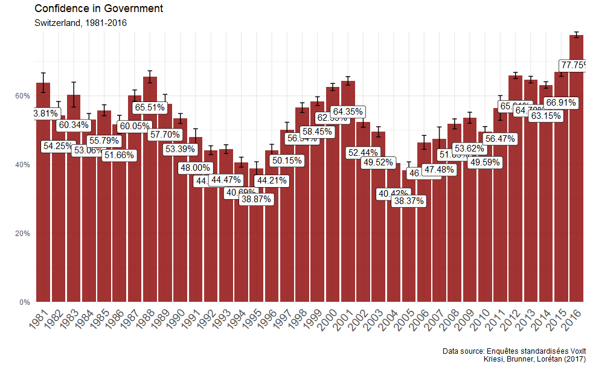

Political stability and crisis in Switzerland
Switzerland is often considered as a successful and well-performing economy. The country typically ranks among the firsts in a wide variety of living standard measures such as the human development index, GDP per capita and so on. Along with the good performances of the economy, one expects that Swiss people also have more trust in their institutions compared with other countries. If one looks at, for instance, the data provided by the OECD on the confidence in government and other institutions, Switzerland is indeed one of the countries with the highest level of trust:
In Switzerland, the confidence in national government in 2020 was the highest among OECD countries with a level of 85%. Other countries like France and Italy have a level of confidence lower than the average.
If one looks at other data provided by the OECD, Switzerland still ranks among the highest. In the graph above, Swiss people show a great deal of confidence in the police (about 85%), parliament (60%) and government (70%). This stands in sharp contrast with France, Italy and the US (which shows very low level of confidence in parliament with 15%). If one tries therefore to assess the evolution of trust in institutions in Switzerland, one thus expects to find a great stability. Nonetheless, one period in recent Swiss history represents an exception: the crisis of the 1990s. This period was marked by recession and was accompanied by a decline in trust in institutions (Brunner and Sgier 1997).
But why is the evolution of trust in institutions important? For my research, I am interested in social conflict, political cleavages and institutional change. The Neorealism approach developped by Amable and Palombarini (2005; 2008), which is dedicated to the analysis of those topics, offers insightful concepts and methods that I will mobilize here in assessing the evolution of Switzerland’s trust in its institutions in the last decades. Until now, Neorealism has been first and foremost mobilized by its founders to analyse France and Italy (Bruno Amable and Palombarini 2014, 2018). In their work, they typically start with the fact that Italy and France went under periods of deep political crises. Leaving their conceptual definitions of crisis (which are really interesting) aside and focusing only on how they identify it empirically, they typically expose data on trust in politicians, institutions, government and in political turnover. However, it is rather straightforward to anyone interested in politics and contemporary history that Italy and France underwent political crises, and data like the ones above only serve to describe well-known facts. The situation is totally different for Switzerland, which is why it is interesting to study this country in a Neorealist approach.
This post will hence be an attempt to periodize, analyse and assess the evolution of trust in institutions in Switzerland as a way to inderectly measure the country’s political stability through time. The objective here is, by using post-electoral survey, to identify the trends in trust in institutions and assess whether and when Switzerland can be characterized as a politically stable country, as opposed to France and Italy. The figures above already show that Switzerland is characterized with a relatively high level of trust, so the goal here is to explore other data which could also allow to see the temporal evolution and thus identify the periods of political stability and crisis in Switzerland.
Assessing political stability in Switzerland: Selects data
Let’s first see what Selects data offer. The Swiss Election Studies (SELECTS) contains a cumulative dataset which is of particular interest.
This dataset is in fact a harmonized dataset of all the successive post-electoral studies that have been conducted in Switzerland between 1971 and 2019 by different universities. This dataset contains a set of “trust in political institutions” variables which are of interest, but not all of them can be used because they are not avaliable for each year of the dataset. The ones which have the most time coverage are the following variables and that I will analyse here are described in the following table:
| Code | name | values | Years |
|---|---|---|---|
| trust1 | trust in federal council | 0 (no trust) to 10 (full trust) with decimal values | not 1979, 2015, 2019 |
| trust2 | trust in national parliament | 0 (no trust) to 10 (full trust) with decimal values | 1991, 1995, 1999, 2003, 2007, 2011 |
| trust3 | trust in cantonal authorities | 0 (no trust) to 10 (full trust) with decimal values | 1995, 1999, 2003, 2007, 2011 |
| trust5 | trust in national political parties | 0 (no trust) to 10 (full trust) with decimal values | 1999, 2003, 2007, 2011 |
| eps1 | evaluation: political system/democracy | scale from 0 to 1, with decimal values | 1971, 1979, 1995, 1999, 2003, 2007, 2011, 2015, 2019 |
Trust in Federal Council

Here is a basic visualisation to show the distribution of the variable for each year. It is strinking how the distribution is almost the same for the years 1971-1975-1987 and then from 1995 to 2011. This suggests a great stability of trust in Federal Council, which seems rather strong. However, since the graph above is rather difficult to interpret due to the fact that it carries too much information and the scales change through the years, I will create an indicator variable to simplify the information. The dummy variable will take value 1 if the respondent takes a value higher than 5 (the middle point level of indifference), and 0 otherwise.

The graph above represents the percentage of respondents who declared to always or most of the time trust the federal council. The only period this trust declined was between 1975 and 1991. However, one should be cautious with the strong decline in 1991, because the scale (number of values the ordinal variable can take) changes for the first time for this year (see the precedent graph above). In fact, the strong decline in 1991 is surely due to the fact that the scale, by including more response choices in the survey (from 4 to 7 points scale), perhaps induced more “middle-point” responses (the middle answer is the mode for 1991). From 1995 to 2011, the trust in federal council shows a great stability, and even increases between 2007 and 2011. Nonetheless, the variable does not include data after 2011, which is unfortunate. Fortunately, there are other variables which cover a bigger time frame. In this regard, the variable on the evaluation of the Swiss democracy/political system (eps1) is interesting:

The graph above shows how strong trust in institutions is in Switzerland and that the latter has even increased in the last years until 2019. Note that the data for 1995 have the same problem as for the year 1991 in the previous graph (change in the variable’s number of categories). I can thus conclude that the trust in institutions is not only stable in Switzerland, but even increasing. One further step, however, is to look at how trust changes if one takes education and income levels into account: do poorer people and less educated people have less trust in institutions in Switzerland? We will see that the picture is slightly more contrasted trust is analyzed for each income level.

Taking into account income quintiles offer a slightly more contrasted results, but trust is high even for low income levels. There is no strong differences in trust if we compare the lowest quintile with the highest (with still somme difference in each year), but one can see that trust increases with income group: richer Swiss people (in terms of income) have more confidence in the political system/democracy in this sample.
Since the dataset also gives the education group, one can do the same graph above with education:

There is overall a positive association between education level and trust in democracy/political system, even though trust is high and systematically above 50% in each year (with one exception for 1979).
Alternative data source: the European Social Survey (ESS)
As we have seen, Selects data have some shortcomings which prevent to conduct a serious evaluation of the evolution of trust in institutions. One thus has to look at other data. To do so, I will now analyse the Swiss trust in institutions using ESS data.
| variable | name | scale |
|---|---|---|
| trstplt | trust in politician | 0 = no trust, 10 = complete trust (discrete scale) |
| trstprl | Trust in country’s parliament | 0 = no trust, 10 = complete trust (discrete scale) |
| stfeco | How satisfied with present state of economy in country | 0 = extremely dissatisfied, 1 = extremely satisfied (discrete scale) |
| stfgov | How satisfied with the national government | 0 = extremely dissatisfied, 1 = extremely satisfied (discrete scale) |
| stfdem | How satisfied with the way democracy works in country | 0 = extremely dissatisfied, 1 = extremely satisfied (discrete scale) |
| agea | Age of respondent, calculated | |
| edulvla | Highest level of education | 0 = not possible to harmonize, 1 = less than secondary, 5 = tertiary education completed |
| edlvch | Highest level of education (Switzerland) | 1 = incomplete compulsory school, 15 = university, 16 = other (discrete scale) |
| hinctnt | Household’s total net income, all sources |
An advantage of the ESS data compared with Selects is the comparability of the trust in institutions variables. As we saw in the first graphs, Selects have changed the scale of their variables through the years, which makes comparison difficult even with a cumulative and harmonized dataset. ESS variables (see table above) do not change their scale, so one can compare data from 2002 and 2020 without facing the problems I had with Selects data.
Warning: le package 'naniar' a été compilé avec la version R 4.2.3Let’s first have a look at how the variable is distributed for a given year, for instance 2020:

The graph is coherent with all the previous data we saw: most Swiss people have confidence and trust in the politicians of their country in 2020. What about the evolution of this trust if one looks at all the rounds provided by ESS since 2002? To have a look a this, I load all the ESS rounds, create an indicator variable (still from the same variable, trstplt) taking value 1 if the respondent takes at least value 5 and plot the proportion for each year:

If one considers trust in politicians as a good indicator of political stability, Switzerland shows a great and increasing level of stability and it would be difficult to say that the country has known any deep political crisis in the last years. The political stability of Switzerland is even more striking when compared with countries which have known instability and systemic crises such as Italy and France:


However, ESS data are rather limited with respect to the time frame: only data from 2002 to 2020 are available. Ideally, I would like to have data which come back at least to the 1980s. In my opinion, both Selects and ESS data have serious shortcomings that prevent any straightforward conclusion regarding the evolution of political stability in Switzerland. For this reason, I searched other data source and found one which can give better results and insights.
Last data source: Vox data
A final and last alternative data source to assess the temporal evolution of trust in institutions in Switzerland (and thus its period of political stability/crises) are the “Vox” studies, which are conducted for after Swiss referendum (“votation populaire” in French) since 1981. Kriesi, Brunner and Lorétan compiled and standardized every Vox studies from 1981 up to 2016 to create a cumulative dataset (Kriesi, Brunner, and Lorétan 2017). This dataset has a variable of interest, “a22 (confidence in government)”, which is a binary variable (either confidence of mistrust in government). The graph below plots the percentage of respondents having confidence in government for each year:

We finally have a satisfying and valuable graph: the time frame is large enough, the variable is the same for each year and the results are far more contrasted and interesting than the previous graphs. One can see clearly different periods of declining and increasing confidence in government, which lead to the conclusion that Switzerland knew different waves of decreasing and increasing political stability as well as clear periods of political crisis. For instance, the graph illustrates well the political crisis of the 1990s: the percentage of people who declared having confidence in government fell from 65% in 1998 to 38.9% in 1995. Confidence in government then fell a for second time from 2001 (64%) to 2005 (38.4%), a period which can thus be considered as a second political crisis due to the very low level of confidence in 2005. But about the period post-2016? The shortcoming of this dataset is that it does not go beyond 2016. Fortunately, another dataset gathered data for the period 2016-2020.